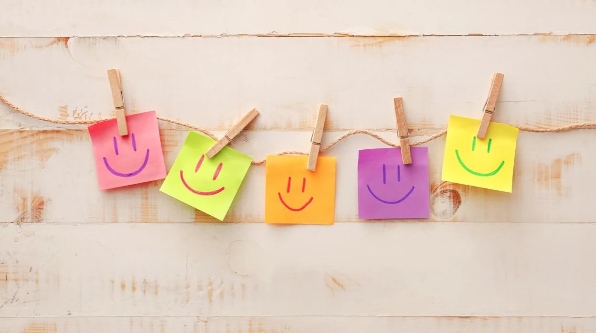

Miguel Ángel García López
I pride myself on my optimistic outlook and resilience. I approach challenges with a solution-oriented mindset, always looking
for opportunities for improvement and innovation. I believe in fostering a positive work environment, which helps motivate my team
to achieve their best. With a strong commitment to collaboration and a forward-thinking attitude, I strive to inspire those around me
to embrace change and pursue excellence.

Positividad: Mantengo una actitud positiva incluso en situaciones difíciles.
Resiliencia: Me recupero rápidamente de contratiempos y desafíos.
Confianza: Tengo fe en mis habilidades y en el potencial de los demás.
Agradecimiento: Reconozco y valoro lo positivo en mi vida diaria.